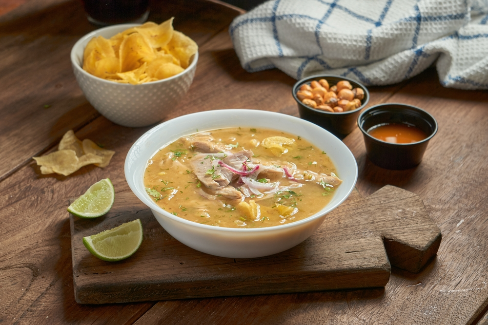

Te voy a contar algo divertido sobre mí: Tengo el talento especial de olvidar por qué entré a una habitación, también digo que solo voy a ver “un capítulo más”… y termino viendo toda la temporada. Soy principiante en programación, pero ya tengo experiencia buscando el famoso punto y coma que rompe todo el código 😂. A veces paso más tiempo entendiendo el error que escribiendo el programa
Soy Irma, una futura desarrolladora en construcción 👩💻✨, pero si hay algo que me define casi tanto como el código, es mi amor por la comida ecuatoriana. Mi plato favorito es el encebollado 🍲, no solo por su sabor, sino porque me conecta con mis raíces, con momentos en familia y con esa sensación de hogar que solo ciertos sabores pueden dar.
Mencanta hablar de comida, descubrir recetas tradicionales y entender la historia que hay detrás de cada plato. Para mí, la gastronomía ecuatoriana no es solo comida, es cultura, identidad y recuerdos. Desde el encebollado hasta otros platos típicos, cada uno tiene algo especial que contar.
En programación estoy dando mis primeros pasos, aprendiendo HTML, CSS y GitHub, y disfrutando el proceso de crear algo desde cero. A veces paso más tiempo buscando un punto y coma perdido que escribiendo código 😂, pero esa misma paciencia que tengo para cocinar o disfrutar una buena receta, la aplico también al desarrollo.
Me gusta aprender paso a paso, experimentar y mejorar cada día. Así como una receta se perfecciona con práctica, siento que mi camino como desarrolladora también se construye poco a poco, con constancia y pasión.
